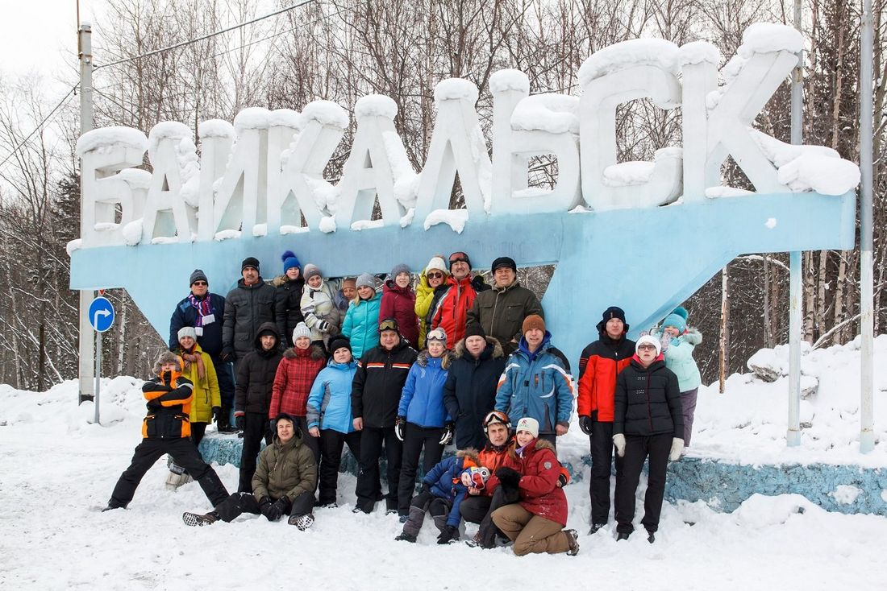
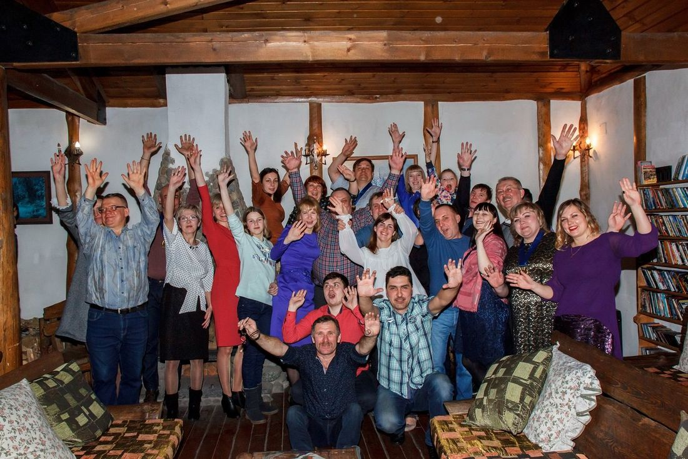
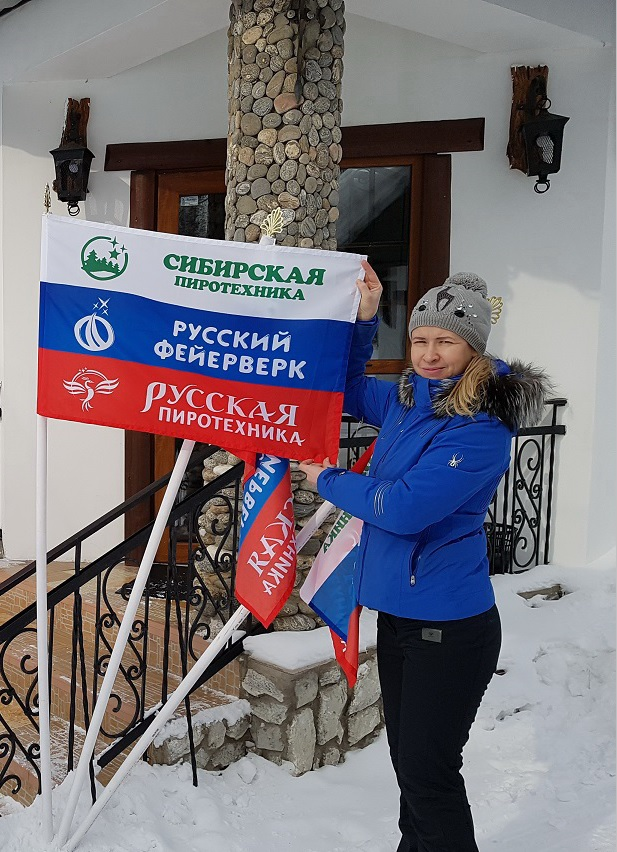

30 ЛЕТ НА РЫНКЕ ПИРОТЕХНИКИ! НАЧИНАЕМ 31-й НОВОГОДНИЙ СЕЗОН

Ровно 30 лет назад – 26 октября 1992 года – мы открылись и зарегистрировали первую из группы наших Компаний.
Мы прошли большой и очень интересный путь. И продолжаем идти вперёд.
Мы не завышаем свой возраст. Не забываем и не отрекаемся от нашей истории и не переписываем её, как это зачастую происходит и в глобальной мировой политике, и на региональном пиротехническом рынке J
С первых дней нашей работы мы занимались оптово-розничной реализацией развлекательной сертифицированной пиротехники. С первого Новогоднего сезона мы заняли лидирующие позиции в оптово-розничной торговле пиротехническими изделиями на рынке Иркутской области и в соседней Бурятии.
Мы и сейчас являемся крупнейшей в регионе Восточной Сибири, Бурятии, Забайкальского края и Якутии специализированной Компанией по оптово-розничной реализации сертифицированных фейерверков.
Подробнее об истории нашей Компании можно прочитать в статье, опубликованной 26 октября 2017 года "Мы 25 лет на рынке пиротехники!!!"
Начинаем наш 31-й Новогодний пиротехнический сезон!
В 1992 году мы завезли в Иркутскую область и Бурятию и заявили о себе лучшей на то время пиротехнической продукцией производства Федерального Центра Пиротехники ФГУП ФНПЦ НИИПХ. С первого сезона мы стали Дилером Федерального Центра Пиротехники. И впоследствии стали его региональными представителями. Ими по-прежнему являемся. Единственное, что ФГУП ФНПЦ НИИПХ практически перестал производить любительскую пиротехнику развлекательного характера и полностью переключился на разработку и выпуск сигнальной пиротехники, пиротехники специального технического назначения и пиротехники для высотных салютов 4-го класса опасности.
Сегодня из нынешнего многообразия пиротехнических торговых марок на наш региональный рынок мы предлагаем наиболее интересные и привлекательные на наш профессиональный взгляд пиротехнические торговые марки:
- Сибирская Пиротехника;
- Русская Пиротехника и её дочерние торговые марки Огненный Цветок и Fire Flower;
- Русский Фейерверк и её дочерняя торговая марка Фейерленд;
- СуперСалют и её дочерняя торговая марка Народный Фейерверк;
- Троицкий Снаряжательный Завод;
- Уральский Пиротехнический Завод;
- Государственное Предприятие Сигнал.
Начиная с 1992 года исторически сложилось, что в нашем регионе примерно со Дня рождения нашей Компании – с конца октября - начинается оптовый Новогодний пиротехнический сезон. Оптовики со всего региона начинают знакомиться с изменениями на пиротехническом рынке, с новинками, с ценами и начинают делать оптовые закупки.
Главные изменения этого года были связаны с глобальным разрушением традиционных логистических цепочек и их перерождением уже в существенно ином качестве. Несмотря на указанные сложности, мы успели хорошо подготовиться к началу оптового Новогоднего пиротехнического сезона. И к нашему юбилею подготовили более 900 позиций ассортимента от лучших пиротехнических торговых марок.
Несмотря на то, что вышеперечисленная продукция востребована к началу оптового Новогоднего сезона и буквально разбирается оптовиками практически «с колёс» ассортимент постоянно пополняется и расширяется новыми поставками от изготовителей и импортёров.
7 лет торговой марке «Сибирская Пиротехника» !!!
В 2022-м году нашему славному детищу торговой марке «Сибирская Пиротехника» исполнилось 7 лет! Отсчёт со дня официального рождения нашего ребёнка мы ведём именно с того дня когда получили первый официальный документ, позволивший начать товарооборот продукции торговой марки «Сибирская Пиротехника». Первый сертификат соответствия на первую партию продукции торговой марки «Сибирская Пиротехника» был зарегистрирован 21 августа 2015 года.
«Сибирская Пиротехника» зарекомендовала себя с самой положительной стороны. Без неё трудно себе представить прилавки и стеллажи пиротехнических Компаний и фирменных магазинов Западной и Восточной Сибири, Бурятии, Забайкалья и Якутии.
Высокое качество продукции торговой марки «Сибирская Пиротехника» в сочетании с конкурентоспособными демократичными ценами привели к высокому потребительскому спросу на «Сибирскую Пиротехнику» в Западной и Восточной Сибири, в Бурятии, в Забайкальском крае и в Якутии.
Стартовал Новогодний оптовый пиротехнический сезон
Вместе с произведёнными первыми оптовыми предновогодними продажами стартовал Новогодний оптовый пиротехнический сезон. К юбилею нашей Компании и к 7-летию торговой марки «Сибирская Пиротехника» для наших оптовиков и розничных покупателей мы подготовили ряд креативных и интересных Акций и предложений! В регионе Восточной Сибири, Бурятии, Забайкалья и Якутии мы предлагаем наиболее выгодные покупателям демократичные цены и наиболее интересную систему скидок для оптовиков.
Мы работаем – чтобы вы зарабатывали!
Ожидается, что в этом Новогоднем пиротехническом сезоне большое значение будут иметь демократичные цены. В связи, с чем мы подготовили ряд интересных оптовых Акций и программ.
В наших последующих публикациях мы подробно расскажем об этих Акциях. Приглашаем оптовиков и любителей пиротехники внимательно следить за нашими публикациями. А пока предлагаем не откладывать оптовые покупки! Количество Акционного товара ограничено. Кроме этого из-за корректировок логистических цепочек у импортёров и снижения количества изготовителей в декабре не исключается некоторый дефицит пиротехники у части ассортимента. Оптовикам стоит поторопиться с выполнением своих оптовых закупок.
Режим работы нашего оптового офиса и склада в ноябре и декабре
Весь НОЯБРЬ - 6 дней в неделю! С 9 утра и до последнего клиента! Воскресенье - выходной.
Весь ДЕКАБРЬ - Без выходных! С 9 утра и до последнего клиента!
Команда молодости нашей…
Тебе судьбу мою вершить
Тебе одной меня судить
Команда молодости нашей
Команда, без которой нам не жить!
Нам 30! И все 30 лет мы на рынке пиротехники! Вполне солидный возраст для коммерческой Компании в нашем современном молодом государстве! И мы по-прежнему молоды! Средний возраст менеджеров нашего оптового отдела составляет 34 года. Ирина, Инна, Павел, Елена и Александра это наш дружный высокопрофессиональный коллектив опытных оптовых менеджеров. Они быстро, чёткои слаженно работают с оптовыми покупателями. Грамотно помогают оптовикам определиться с их заявками на пиротехническую продукцию по ассортименту, эффектам и объёмам закупки. Быстро и качественно обрабатывают необходимую расходную и сопроводительную документацию. Отправляют её на сборку и отгрузку в транспортно-складское хозяйство. Где такой же высокопрофессиональный коллектив опытных сотрудников быстро собирает, отгружает и развозит заявки.
Мы держим курс на подготовку и рост собственных высокопрофессиональных менеджеров. Два наших оптовых менеджера начинали свой трудовой путь в наших фирменных магазинах в качестве продавцов-консультантов. Ещё трое наших менеджеров прошли хорошую школу и набирались опыта в наших дочерних структурах.
В эту важную и приятную юбилейную дату нашей Компании с особой теплотой хочется поблагодарить за хороший многолетний труд весь наш дружный коллектив всех наших подразделений и фирменных магазинов! С юбилеем!
Мы преданы единственной команде…
На верность проверяются таланты
Нам есть за что судьбу благодарить
Мы преданы единственной команде
Команде, без которой нам не жить!
Но в первую очередь хотелось бы отметить тех сотрудников, кто отдал Фирме более двух десятков честного труда. Хочу отметить наших ветеранов. Кто строил Компанию вместе с нами. Некоторые из них прожили вместе с Фирмой более половины всей своей жизни:
- Степаненко Нина Дмитриевна пришла в нашу Компанию в 1995 году. Сначала работала продавцом-консультантом. Далее перешла должность материально ответственного сотрудника склада. Потом была переведена на должность кассира. В 2020 году ушла на заслуженную пенсию. Проработала в Компании четверть века! Нина Дмитриевна очень ответственный и честный сотрудник. Только такому и можно было доверить кассу.
- Ежова Людмила Игоревна пришла работать в Компанию молодым сотрудником (в 21 год) в 1997 году на должность главного бухгалтера и довольно быстро стала одним из ключевых сотрудников нашей Фирмы. В 1998 году Людмила была утверждена на должность генерального директора ещё одной из группы наших Компаний – ООО САЛЮТ-1. И по сей день её возглавляет. А также руководит нашим молодым ООО «САЛЮТ». Более половины своей жизни и уже четверть века Людмила Игоревна работает в нашей Компании. Она грамотный и ответственный сотрудник. Имеет высшее юридическое образование. В коллективе сотрудников и у партнёров Компании Людмила Игоревна заслуженно пользуется авторитетом и уважением.
- Туковский Андрей Александрович работал в Компании с 1997 по 2021 год в должности водителя дежурного микроавтобуса. Отработал в Фирме 24 года и ушёл в свой небольшой частный бизнес. Андрей является главой славной трудовой династии Туковских. Всего Туковских у нас в разные годы работало пять человек. Андрей, его супруга, старшая дочь и племянник со своей супругой. Сотрудники уважают Андрея за его доброжелательный приветливый характер. А руководство ценило его за обязательность и исполнительность.
- Ахмедов Игорь Махмедович пришёл в Компанию в 1998 году на должность водителя грузового автомобиля. Игорь в фирме всегда слыл мастером «золотые руки». В разные годы работал водителем, пиротехником и сотрудником склада. И сейчас в возрасте 64 лет несмотря на довольно непростой и сложный физический труд он по-прежнему продолжает трудовую деятельность в нашей Компании.
- Рогова Елена Александровна пришла в нашу Компанию в 2000 году на должность продавца-консультанта. Впоследствии Елена перешла в складское хозяйство Фирмы на должность старшего кладовщика. В работе показала себя ответственным и шустрым (другого слова и не подберёшь) сотрудником. Среди сотрудников Елена пользуется уважением.
- Бойко Геннадий Витальевич в 2002 году сразу после демобилизации из срочной службы устроился в нашу Компанию кладовщиком. В разные годы он работал у нас кладовщиком, пиротехником, старшим кладовщиком и начальником склада. И вот теперь - в юбилейный для Компании год - этот по прежнему молодой по возрасту человек отмечает своё 20-летие работы в нашей Фирме. 20 лет трудового стажа в одной и единственной для него Компании. Это дорогого стоит!
- Балышева Ирина Андреевна – достойная дочь своего достойного отца. Ещё одна представительница трудовой династии Туковских. Ирина пришла в нашу Компанию после окончания средней школы в 2004 году в возрасте 18 лет. Сначала работала продавцом-консультантом в Фирменном отделе. Затем перешла на должность старшего кладовщика. После получения высшего образования перешла в оптовый отдел на должность менеджера. И со временем выросла в старшего менеджера и начальника оптового отдела. В настоящее время она руководит дружным коллективом менеджеров оптового отдела Компании. Свою работу знает хорошо, выполняет её качественно и грамотно. Среди сотрудников Компании и среди оптовых клиентов пользуется уважением. Ирина пока ещё не ветеран Компании. Пока ещё нет 20 лет трудового стажа. Но уже половину своей жизни Ирина прожила и отработала вместе с нашей Фирмой.
Из районных ветеранов
Самый главный ветеран!
Ну и раз уж заговорили о ветеранах Компании, то было бы не справедливо не упомянуть несколько строк о трудовой династии Орловых.
С самого рождения Фирмы всегда были рядом и помогали нам своим трудом мои родители – Орлов Пётр Петрович и Орлова Людмила Ивановна. Сначала оба помогали Фирме во внеурочное время. Причём помощь эта была вполне обыденной, но очень необходимой. Например возил нас по выходным на своём личном автомобиле торговать пиротехникой и сопутствующими товарами на черемховский розничный рынок. Времена были непростыми. Нужно было работать и кормить семьи. Впоследствии мои родители перешли работать к нам в Компанию на постоянной основе на должности заместителей директора по технической части и по кадровым вопросам.
У моего отца огромный опыт работы на крупном градообразующем предприятии. Где его всегда ценили как очень грамотного специалиста. Этот опыт работы пригодился и у нас. В нашей Компании он отладил материально-техническую базу и занимается вопросами противопожарной безопасности.
Людмила Ивановна долгое время вела в Компании кадровую работу. Возглавляла у нас направления, связанные с производством пива и продуктов. В настоящее время курирует мелко-оптовую торговлю товарами для животных.
Родителям 79 и 78 лет. Но они по-прежнему в трудовом строю. И пока не желают уходить на заслуженный отдых.
Ветераны нашей Компании это золотой фонд Фирмы и отличный пример честного и ответственного труда для нашей молодёжи! Большое вам спасибо за ваш труд и низкий всем вам поклон!
Мы друзей за ошибки прощали
Лишь измены простить не могли
Не всегда всё было гладко и хорошо. Историю Компании я нигде и никогда не переписывал. Ни в жизни, ни на сайте. Бывали и грустные и неприятные страницы жизни нашей Компании. Но в отличии от экс-попутчика за административно-юридическую юбку супруги партнёра косяки своей деятельности я никогда не прятал. И в Москву в отличии от него же с архивом личной переписки в целях накляузничать на партнёра я не бегал. И много ещё чего подлого и гнусного не делал и не делаю. Чего позволял и позволяет себе мой экс-попутчик. Воспитание у меня другое. Не в стиле доносчиков и подлецов 1937-1939 годов. Да и в Москве тогда разобрались, кто и чего стоит. И от кого настоящей гнильцой попахивает. Верно?
Помогли "товарищу" выйти из пропахшего сигаретным дымом зелёного вагончика. Только дешёвый вагончик из него так и не выветрился. Вот такая необычная интерпретация известной поговорки.
Мы без конца проклинаем товарища Сталина, и, разумеется, за дело. И все же я хочу спросить — кто написал четыре миллиона доносов?
С. Довлатов
Оставим для истории вопрос Довлатова риторическим…
Ещё раз от всей души поздравляю весь наш дружный коллектив Центра Пиротехники САЛЮТ с Юбилеем Компании! Как у нас принято юбилей по- настоящему отпразднуем в январе на одной из хороших прибайкальских турбаз.
А пока … напряжённые трудовые предновогодние будни!
С тобою мы объехали полсвета
Но каждый раз тянуло нас домой!
Поставь мою любимую кассету
Давай передохнём перед игрой...
Тебе судьбу мою вершить
Тебе одной меня судить
Команда молодости нашей
Команда, без которой нам не жить
Руководитель Центра Пиротехники САЛЮТ
Руководитель проекта «Сибирская Пиротехника»
Игорь Петрович Орлов


Байкальск
Юбилей - 25 лет нашей Компании!
Руководители Группы Компаний САЛЮТ с семьями:
- САЛЮТ
- САЛЮТ СИБИРИ
- САЛЮТ-БРАТСК
- САЛЮТ-УСОЛЬЕ
- САЛЮТ – УЛАН-УДЭ
- КАРНАВАЛ
- ЧИТА-САЛЮТ
- САХА-САЛЮТ
- ВЕСЁЛЫЙ ПРАЗДНИК
- МИР САЛЮТОВ
- МИР ФЕЙЕРВЕРКОВ
